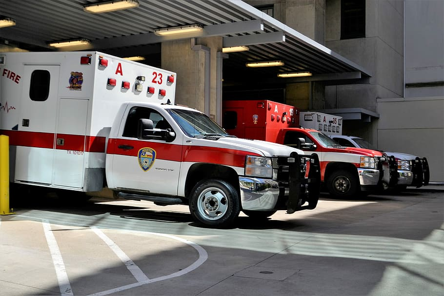

← Back to City Hospital
Hospital Status
City Hospital's current status, department by department.
The figures below are illustrative, part of the Adversary Wars simulation, not a live feed. Call ahead for current wait times.
Overview
Demonstration data
ER Wait Time
38 min
Beds Available
22 / 340
Ambulance Bay
Open
Blood Bank
O− Low
Updated hourly during business hours. Figures are illustrative and shown for demonstration purposes only.
By Department
Current status across all eight departments.
| Department | Status | Note |
|---|---|---|
| Emergency & Trauma | Busy | 38 min average wait |
| Cardiology | Normal | Same-day consults available |
| Maternity & Newborn | Normal | Tours available Mon–Sat |
| Pediatrics | Normal | Walk-in vaccination clinic open |
| Oncology | Normal | Infusion chairs available |
| Orthopedics & Sports Medicine | Busy | 2-week wait for non-urgent consults |
| Radiology & Imaging | At Capacity | MRI backlog. CT and X-ray unaffected. |
| Laboratory & Pathology | Normal | Standard turnaround |

What the Statuses Mean
Reading the status table.
-
Normal
Typical wait times and availability for that department.
-
Busy
Longer than usual waits or a multi-week backlog for non-urgent care. Same-day and emergency care are still available.
-
At Capacity
Non-urgent requests may be delayed further. Emergency care is not affected.